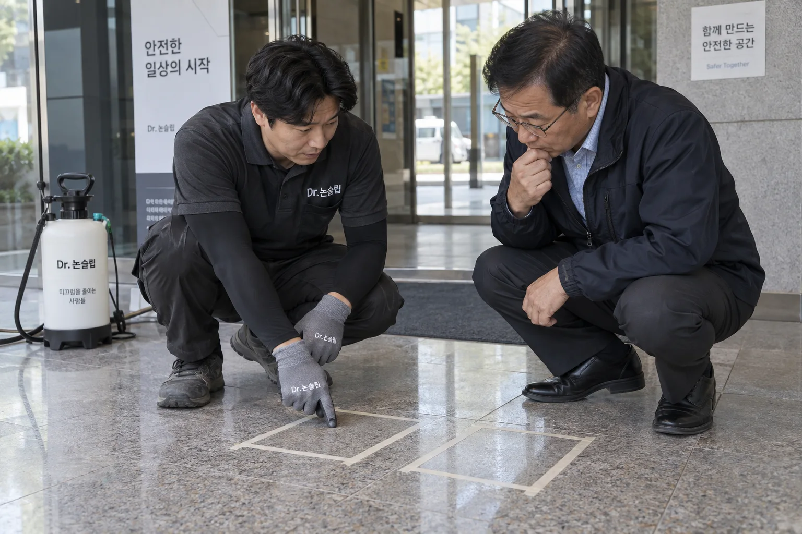
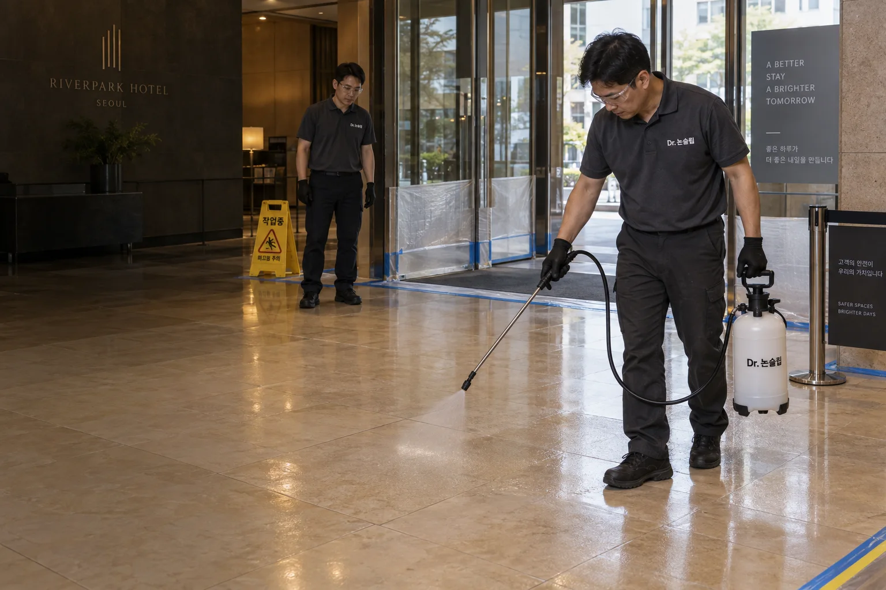
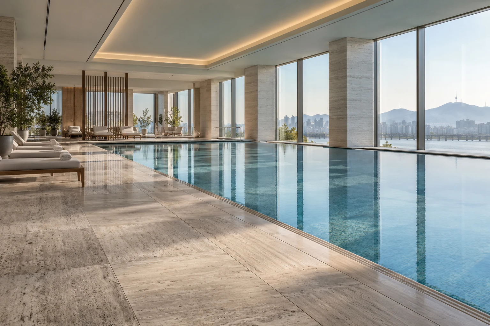
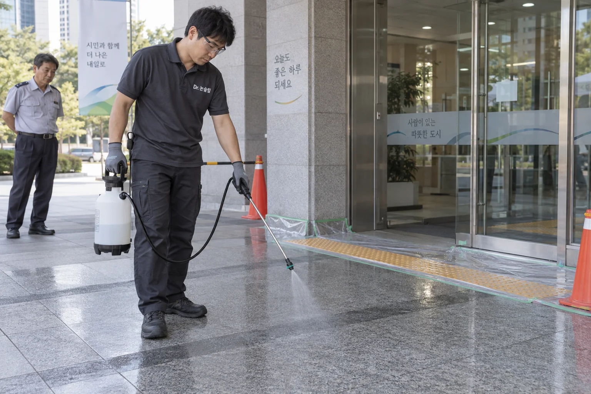
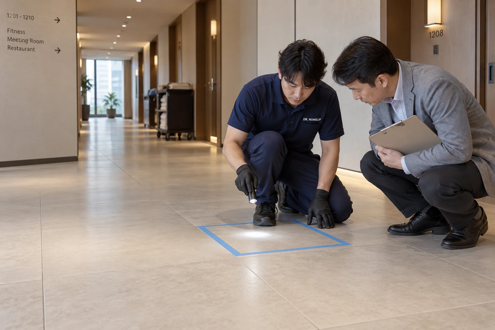
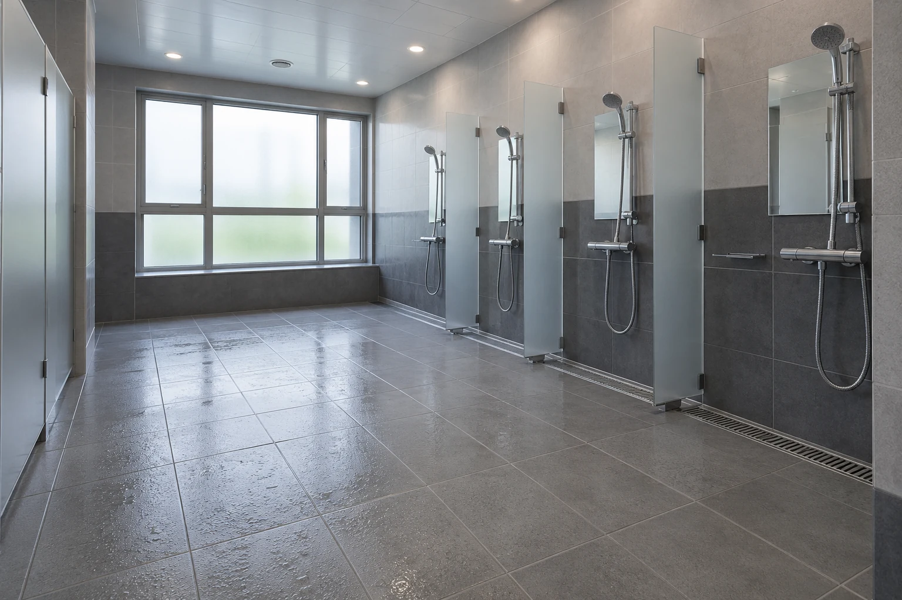
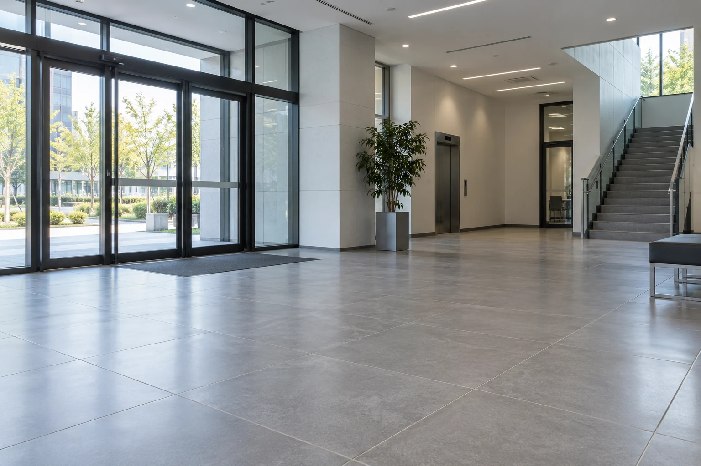
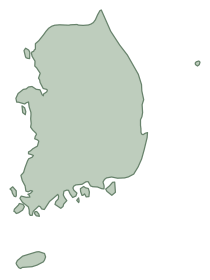

무료 방문 실측·
샘플 시공 제공

현장에 방문해 재질과 면적을 확인하고 작은 구역에 먼저 시공합니다. 고객이 효과와 외관을 확인한 뒤 본 시공을 결정합니다.
무료 방문·샘플 시공 상담


닥터 논슬립 · 미끄럼방지 전문 시공
기존 타일·석재의 젖은 바닥 미끄럼 저항을 개선합니다.
전국 방문 실측·샘플 시공 무료 제공.

현장에 방문해 재질과 면적을 확인하고 작은 구역에 먼저 시공합니다. 고객이 효과와 외관을 확인한 뒤 본 시공을 결정합니다.
무료 방문·샘플 시공 상담
닥터 논슬립이 직접 운영하는 시공팀이 현장을 맡습니다. 현장 확인부터 약제 적용·세척·마무리까지 직접 진행합니다.
시공팀과 운영 기준
시공한 바닥의 관리 방법을 안내하고 12개월 무상 A/S를 제공합니다. 적용 범위와 조건은 시공 전에 안내합니다.
무상 A/S 안내작업 사진은 서비스를 설명하기 위한 브랜드 이미지입니다.
주방의 물기, 수영장 통로, 어르신이 이용하는 욕실. 미끄러짐은 이용자의 부상과 시설 운영의 부담으로 이어질 수 있습니다.
고령자 안전사고의 78.8%가 낙상사고.
한국소비자원이 집계한 사고 유형과 발생 규모를 확인하세요.
65세 이상 · 실제 위해가 발생한 CISS 접수 사례 15,063건.
낙상은 미끄러짐·넘어짐과 추락을 합한 분류입니다.
출처: 한국소비자원, 2024년 고령자 위해정보 동향 분석, 표 3-1 (2025.7.)
손님·직원·가족의
일상에 남는 피해
한 번의 사고가 만드는
시간과 비용
작업 차질과 불안,
시설에 대한 고객의 신뢰
전용 약제가 타일·석재 표면에 만드는 눈에 보이지 않는 미세 공극.
이 작은 변화가 젖은 바닥의 접촉과 미끄럼 저항을 개선합니다.
기존 타일·석재 표면을 처리하는 식각 공법.
식각의 원리와 시공방법젖으면 바닥과 밑창의 접촉이 달라져
미끄러워질 수 있습니다.
미세 공극이 젖은 바닥에서의
접촉과 마찰에 작용합니다.
확대 영역은 육안으로 볼 수 없는 미세 공극을 단순화한 개념도입니다. 색·광택은 샘플에서 함께 비교합니다.
적용 여부와 외관은 샘플에서 확인합니다. 유지 기간은 재질·사용 환경·관리 상태에 따라 달라집니다.
유치원·학교·요양원도 시공합니다. 물기가 생기고 사람이 걷는 구역을 중심으로 적용합니다.

조리대 앞·세척 구역·배식 통로

풀 주변·샤워실·객실 욕실

출입구·로비·공용 화장실

욕실 한 곳도 기존 타일에 시공
닥터 논슬립 · 전국 출장 시공
현장에서 효과와 외관을 확인한 뒤 결정하세요.
직접 운영 시공팀 · 시공 후 12개월 무상 A/S
